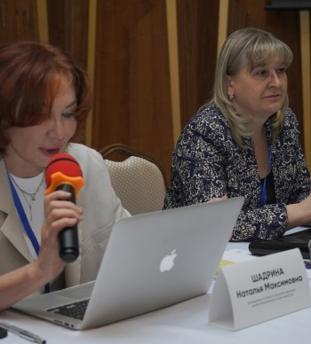

Результатом конференции в Казахстане стало обсуждение педагогами, экспертами и обучающимися из России и стран СНГ перспектив развития искусственного интеллекта в сфере образования.
3-4 декабря 2021 года в г. Нур-Султан (Казахстан) на базе Университета КАЗГЮУ прошла Международная конференция «Искусственный интеллект в образовании» Ее участниками стали более 130 педагогов из России, Казахстана и стран СНГ. Международная конференция в Казахстане «Искусственный интеллект в образовании» прошла в рамках Года науки и технологий, в ходе которого было проведено более 80 федеральных мероприятий от запуска современных образовательных платформ до просветительских, образовательных мероприятий и другие.
В ходе мероприятия рассматривались вопросы, которые позволяли обеспечить широкий доступ к российским научным исследованиям, открытиям в области искусственного интеллекта в России и Казахстане. Более 100 научных сотрудников, руководителей и педагогов образовательных организаций, обучающейся молодежи обменялись информацией о возможностях внедрения искусственного интеллекта в сферу образования, основные тренды в развитии технологий искусственного интеллекта, а также рассмотрены перспективы и форматы использовании искусственного интеллекта в образовательных организациях двух стран.
С докладом по теме «Искусственный интеллект в современном образовании» выступила Надежда Сурова, руководитель Центра компетенций «Искусственный интеллект» НТИ, управляющий директор Центра компетенций «Кадры для цифровой экономики» Университета 20.35 НТИ, член Экспертного совета Государственной Думы по цифровой экономике и блокчейн-технологиям, член Совета Федерации по цифровой экономике. Об искусственном интеллекте в цифровой диагностике soft skills рассказал Андрей Комиссаров, директор Университета 2035 НТИ по направлению «Развитие на основе данных». Приложения виртуальной и дополненной реальности в образовании представил Глеб Власов, руководитель сектора виртуальной и дополненной реальности, научный сотрудник Московского технического университета связи и информатики.
Большое внимание участников также привлек доклад «Искусственный интеллект в образовании 21 века. Пространство для новых возможностей преподавания иностранных языков. На примере учебника РКИ «Привет, Россия!», который представила Ольга Плотникова, магистр лингвистики, старший преподаватель в НИУ ВШЭ (Москва), создатель сообщества для преподавателей РКИ и портала «RKI.today», автор учебников «Привет, Россия», и «Русский язык сегодня», автор и разработчик первого в РКИ мобильного приложения «Learn&Go». Александр Соболев, начальник Центра довузовской подготовки и профориентационной работы «Тверского государственного медицинского университета» Минздрава РФ, член Президиума и председатель Тверского регионального отделения Ассоциации учителей и преподавателей химии России, поделился спецификой применения искусственного интеллекта при обучении химии. Участники конференции также ознакомились с опытом разработки цифровых образовательных ресурсов по русскому языку для системы e-learning, о которых рассказала Шолпан Жаркынбекова, профессор кафедры теоретической и прикладной лингвистики Евразийского национального университета им. Л.Н. Гумилева, доктор филологических наук (Нур-Султан).
Кроме того, в ходе конференции состоялся круглый стол «Современная школа с искусственным интеллектом: варианты использования», участники которого обсудили актуальные тенденции в сфере искусственного интеллекта и влияние этих тенденций на образование. Модератором выступила Диана Минец, учитель русского языка и литературы московской школы № 1561», канд. филол. наук, призер Всероссийского конкурса «Учитель года – 2020». Разработка коллективного человеко-машинного интеллекта была рассмотрена в рамках круглого стола «Цифровой след в образовании, образовательный дата-инжиниринг и новая цифровая реальность», модерировал который Андрей Комиссаров. Еще на нескольких круглых столах были затронуты вопросы, посвященные технологиям искусственного интеллекта и их применению в образовании. Так, Наталья Шадрина, руководитель по работе с регионами Обрсоюза, эксперт Национального союза педагогов, провела круглый стол по теме «Когда проще – лучше. Как ИИ помогает оптимизировать процессы и сосредоточиться на главном? Искусственный интеллект как необходимое условие построения сквозных образовательных траекторий».
По мнению участников, мероприятие стало эффективной площадкой для обмена опытом использования технологий искусственного интеллекта в сфере образования в странах СНГ и обсуждения перспектив их развития. Проведение конференции позволило ознакомить педагогов с российской системой образования, научным потенциалом и инициативами в области ИИ. Организация подобных мероприятий способствует развитию сотрудничества научных сообществ России и стран СНГ, а также разработке инновационных ИИ-решений для использования в образовательной системе.
Участники в качестве обратной связи определили, что организация подобных мероприятий способствует развитию сотрудничества научных сообществ России и стран СНГ, обеспечивает популяризацию русского языка, а также способствует распространению информации об инновационных ИИ-решений для образовательной системы стран в международном сообществе.
С материалами конференции можно ознакомиться на официальном сайте ai2021.education. На портале также представлены записи выступлений участников мероприятия.
Вопросы о прошедшей конференции можно задать, обратившись в организационный комитет мероприятия:
- ООО «Б2Г»,
- +7 (499) 110-53-84,
- email: mail@b2g.moscow.